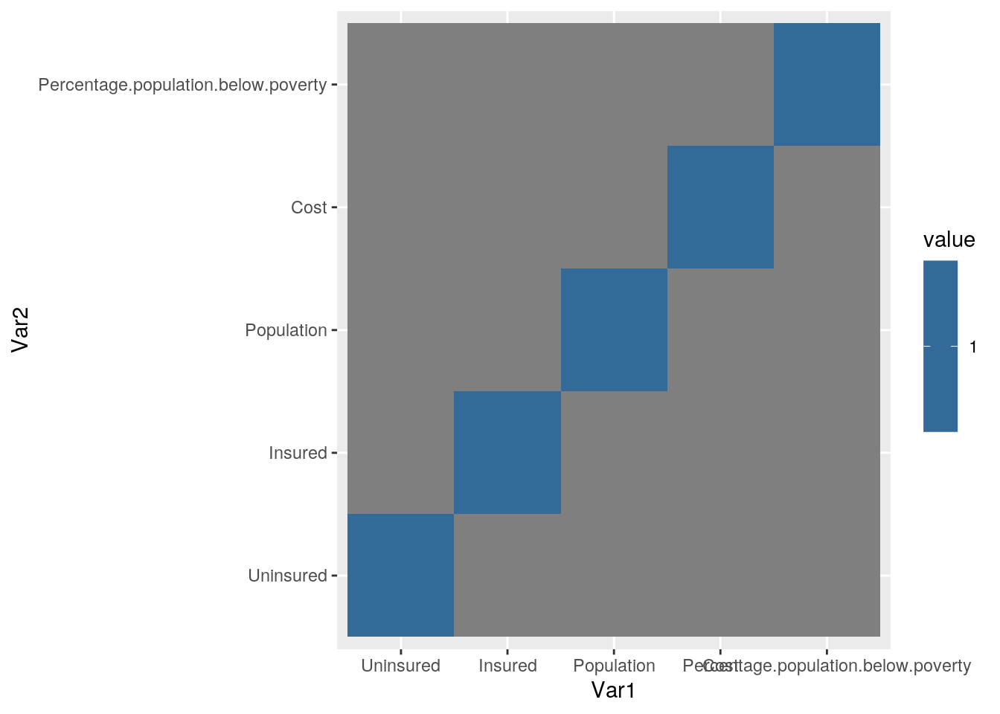
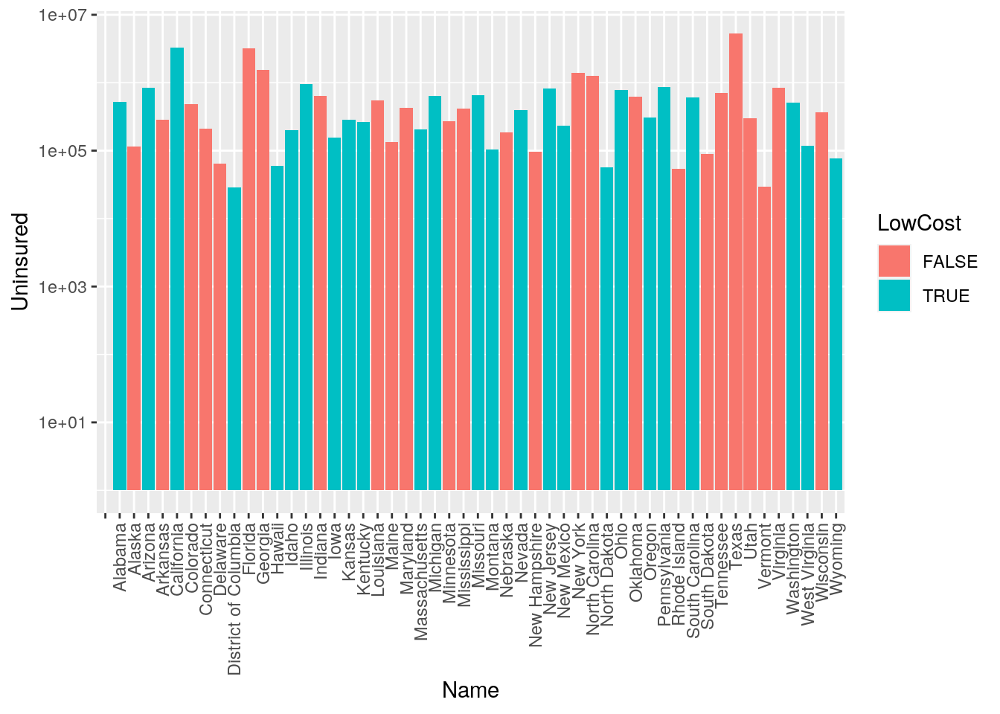
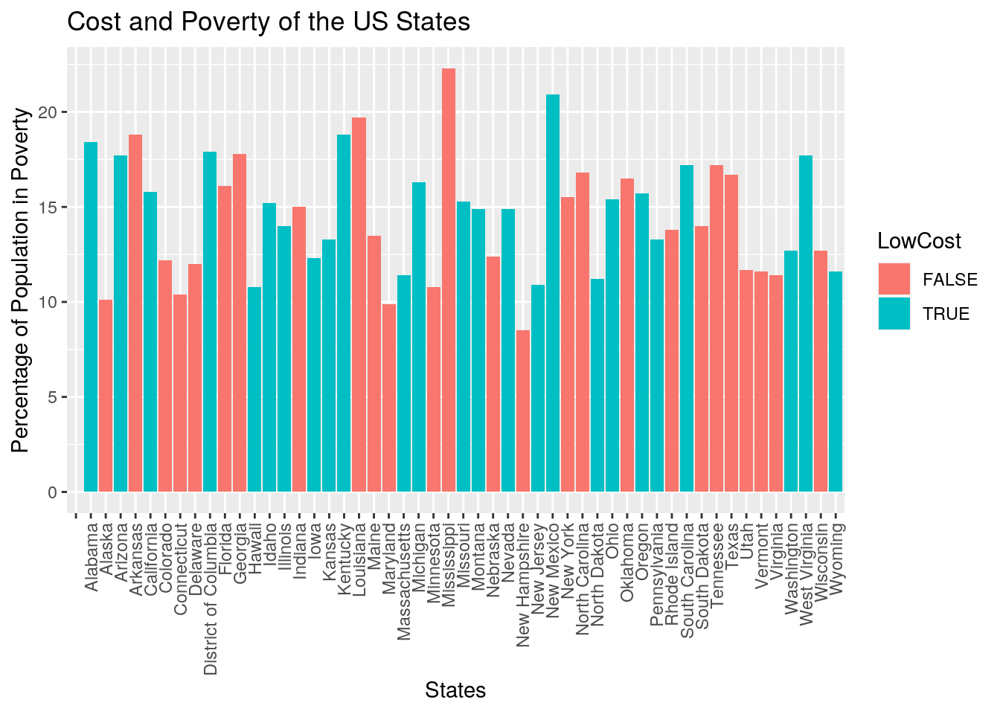
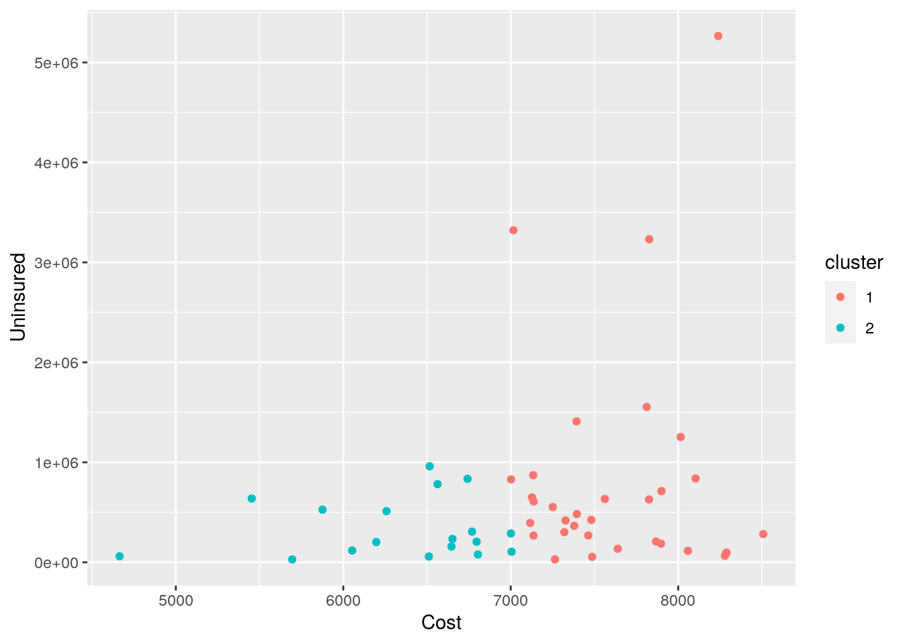
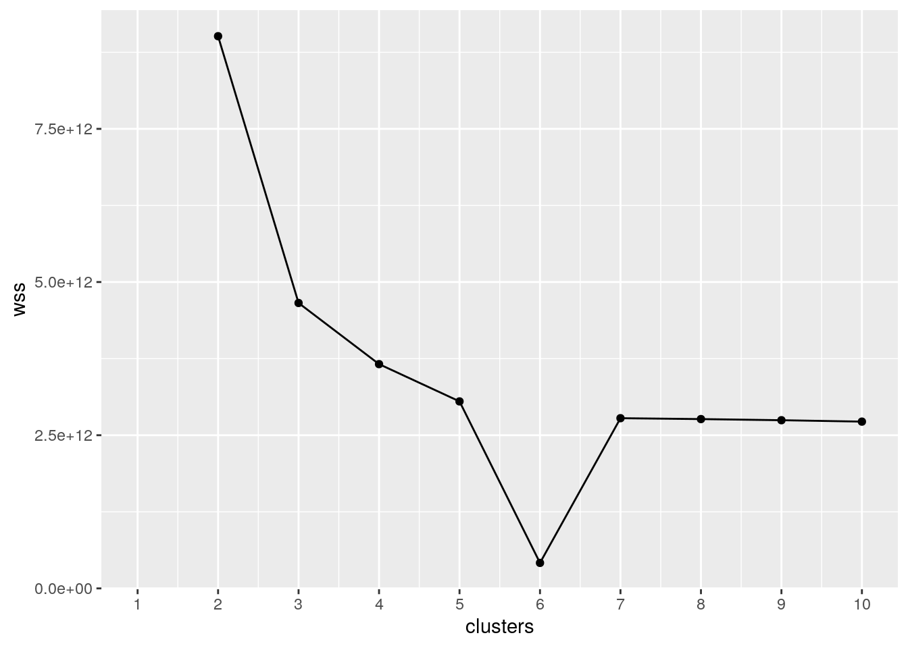
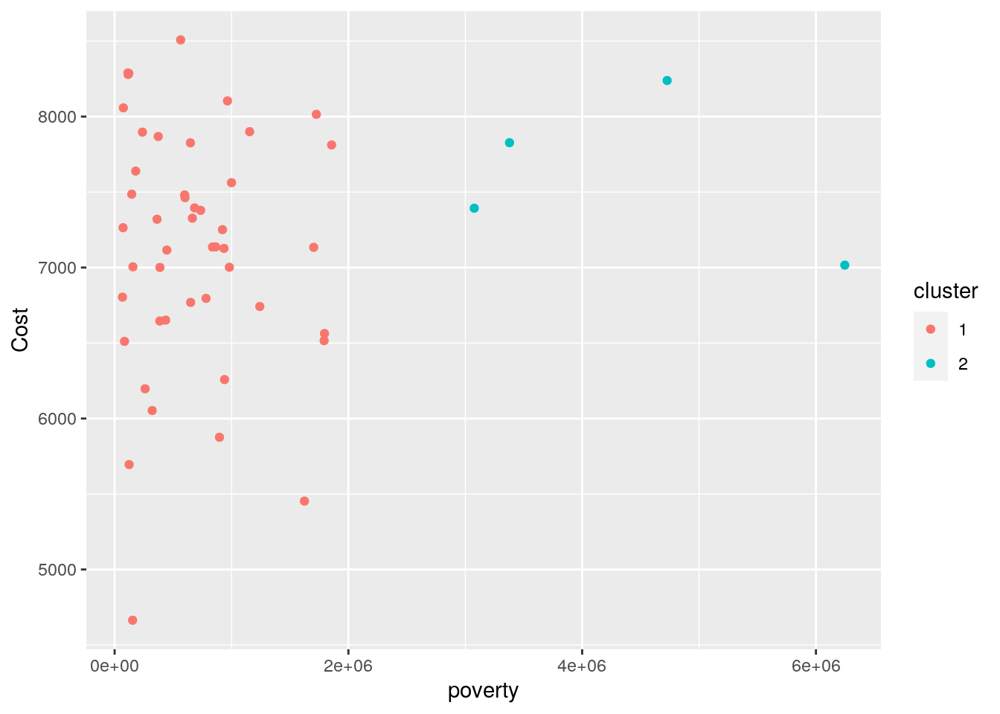
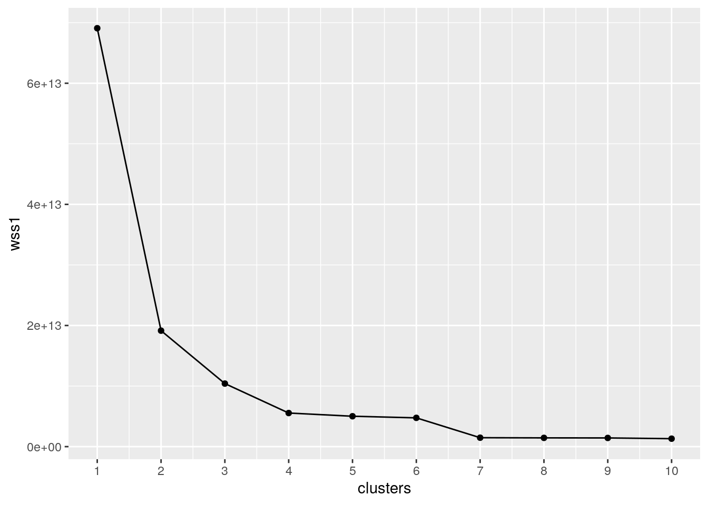

A knitted R Markdown document (ideally HTML) and the raw R Markdown file (as .Rmd) should both be submitted to Canvas by 11:59pm on 10/11/2020. These two documents will be graded jointly, so they must be consistent (i.e., don’t change the R Markdown file without also updating the knitted document).
The text of the document should provide a narrative structure around your code/output. All results presented must have corresponding code. Any answers/results/plots etc. given without the corresponding R code that generated the result will not be considered. Furthermore, all code contained in your final project document must work correctly (knit early, knit often)! Please do not include any extraneous code or code which produces error messages. (Code that produces warnings is acceptable, as long as you understand what the warnings mean!)
Find two (!) datasets with one variable in common (e.g., dates, times, states, counties, countries, sports players), both with at least 50 observations (i.e., rows) in each. Please think very carefully about whether it makes sense to combine your datasets! If you find one dataset with 50 patients and it has their age, and you find another dataset with 50 different patients that has their ages, it makes no sense to join them based on age (you would just be pairing up random people of the same age).
When combined, the resulting/final dataset must have at least 4 different variables (at least 3 numeric) in addition to the common variable (i.e., five variables total).
You can have as many variables as you would like! If you found two datasets that you like but they don't have enough variables, find a third dataset with the same common variable and join all three.
If the datasets are not tidy, you will need to reshape them so that every observation has its own row and every variable its own column. If the datasets are both already tidy, you will make them untidy with pivot_wider()/spread() and then tidy them again with pivot_longer/gather() to demonstrate your use of the functions. It's fine to wait until you have your descriptives to use these functions (e.g., you might want to pivot_wider() to rearrange the data to make your descriptive statistics easier to look at); it's fine long as you use them at least once!
Join your 2+ separate data sources into a single dataset based on a common ID variable! If you can't find a good pair datasets to join, you may split one main dataset into two different datasets with a common ID variable in each, and then join them back together based on that common ID, but this is obviously less than ideal.
Create summary statistics
Use all six core dplyr functions (filter, select, arrange, group_by, mutate, summarize) to manipulate and explore your dataset. For mutate, create a new variable that is a function of at least one other variable, preferably using a dplyr vector function (see dplyr cheatsheet). It's totally fine to use the _if, _at, _all versions of mutate/summarize instead (indeed, it is encouraged if you have lots of variables)
Create summary statistics (mean, sd, var, n, quantile, min, max, n_distinct, cor, etc) for each of your numeric variables both overall and after grouping by one of your categorical variables (either together or one-at-a-time; if you have two categorical variables, try to include at least one statistic based on a grouping of two categorical variables simultaneously). If you do not have any categorical variables, create one using mutate (e.g., with case_when or ifelse) to satisfy the group_by requirements above. Ideally, you will find a way to show these summary statistics in an easy-to-read table (e.g., by reshaping). (You might explore the kable package for making pretty tables!) If you have lots of numeric variables (e.g., 10+), or your categorical variables have too many categories, just pick a few (either numeric variables or categories of a categorical variable) and summarize based on those. It would be a good idea to show a correlation matrix for your numeric variables (you will need it to make one of your plots).
Make visualizations (three plots)
stat="summary"Perform k-means/PAM clustering or PCA on (at least) your numeric variables.
Include all steps as we discuss in class, including a visualization.
If you don't have at least 3 numeric variables, or you want to cluster based on categorical variables too, convert them to factors in R, generate Gower's dissimilarity matrix on the data, and do PAM clustering on the dissimilarities.
Show how you chose the final number of clusters/principal components
Interpret the final clusters/principal components
For every step, document what your code does (in words) and what you see in the data!
Prerequisite: Finding appropriate data from at least two sources per the instructions above: Failure to do this will result in a 0! You will submit a .Rmd file and a knitted document (pdf).
# For this project I found two datasets. One from Business
# Insider on average health costs per state and the other
# from kaggle containing insurance and population information
# for each state including: population, percent insured, and
# percent of the population below poverty. These datasets
# were interesting to me because as a pre-medical student I
# find it extremely important to understand issues in public
# health and one of these issues is the high cost of
# insurance. The high cost of insurance is something that
# unfairly affects those in poverty from achieving the
# healthcare they need. I expect to find higher health care
# costs for the states with a higher percentage of population
# below poverty. I also expect for the states with higher
# percentages of the population insured to have lower costs.
# The states with the lowest under poverty percentage and
# highest percentage of the population insured will have the
# lowest of average healthcare costs.medcost <- read.csv("medcost.csv")
insurance <- read.csv("State.csv")# Although the datasets were already tidy, in order to
# demonstrate my understanding of the tidying functions, I
# widened the medcost data which contained the states and
# their average yearly medical cost. The widening created 51
# columns, one for each state including D.C., and two rows,
# one for the states and one for the average costs. This is
# different from the previous form of the data, which was
# presented in a long form of two columns, one containing the
# states, and another containing the costs.library(tidyr)
library(tidyverse)
pivot_wider(medcost, names_from = Name, values_from = Cost)## # A tibble: 1 x 51
## Arkansas Alabama Arizona California Colorado Connecticut `District of Co…
## <int> <int> <int> <int> <int> <int> <int>
## 1 8508 5876 6742 7016 7395 7868 5695
## # … with 44 more variables: Delaware <int>, Florida <int>, Georgia <int>,
## # Hawaii <int>, Iowa <int>, Idaho <int>, Illinois <int>, Indiana <int>,
## # Kansas <int>, Kentucky <int>, Louisiana <int>, Massachusetts <int>,
## # Maryland <int>, Maine <int>, Michigan <int>, Minnesota <int>,
## # Missouri <int>, Mississippi <int>, Montana <int>, `North Carolina` <int>,
## # `North Dakota` <int>, Nebraska <int>, `New Hampshire` <int>, `New
## # Jersey` <int>, `New Mexico` <int>, Nevada <int>, `New York` <int>,
## # Ohio <int>, Oklahoma <int>, Oregon <int>, Pennsylvania <int>, `Rhode
## # Island` <int>, `South Carolina` <int>, `South Dakota` <int>,
## # Tennessee <int>, Texas <int>, Utah <int>, Virginia <int>, Vermont <int>,
## # Washington <int>, Wisconsin <int>, `West Virginia` <int>, Wyoming <int>,
## # Alaska <int>healthdata <- full_join(insurance, medcost, by = "Name") %>%
select(Name, "Percentage.population.below.poverty", "Percentage.population.insured",
Population, Cost)
# I chose full join because it was the most effective way to
# join the two datasets together.dplyr functions in the service of generating summary statistics (18 pts)
health.data <- healthdata %>% mutate(PercentPop_Uninsured = 100 -
Percentage.population.insured)
health.data <- health.data %>% mutate(Uninsured = (PercentPop_Uninsured/100) *
Population)
health.data <- health.data %>% mutate(Insured = Population -
Uninsured)
health.data <- select(health.data, Name, Uninsured, Insured,
Population, Cost, Percentage.population.below.poverty)
mean(health.data$Cost)## [1] NAhealth.data %>% group_by(Name, "Percentage population below poverty") %>%
summarize(LowCost = Cost < 7171.314) %>% filter(LowCost ==
FALSE) %>% arrange(desc("Percentage population below poverty"))## # A tibble: 26 x 3
## # Groups: Name [26]
## Name `"Percentage population below poverty"` LowCost
## <fct> <chr> <lgl>
## 1 Alaska Percentage population below poverty FALSE
## 2 Arkansas Percentage population below poverty FALSE
## 3 Colorado Percentage population below poverty FALSE
## 4 Connecticut Percentage population below poverty FALSE
## 5 Delaware Percentage population below poverty FALSE
## 6 Florida Percentage population below poverty FALSE
## 7 Georgia Percentage population below poverty FALSE
## 8 Indiana Percentage population below poverty FALSE
## 9 Louisiana Percentage population below poverty FALSE
## 10 Maine Percentage population below poverty FALSE
## # … with 16 more rowshealth.data %>% group_by(Name, Percentage.population.below.poverty) %>%
summarize(LowCost = Cost < 7171.314) %>% filter(LowCost ==
TRUE) %>% arrange(desc(Percentage.population.below.poverty))## # A tibble: 25 x 3
## # Groups: Name [25]
## Name Percentage.population.below.poverty LowCost
## <fct> <dbl> <lgl>
## 1 New Mexico 20.9 TRUE
## 2 Kentucky 18.8 TRUE
## 3 Alabama 18.4 TRUE
## 4 District of Columbia 17.9 TRUE
## 5 Arizona 17.7 TRUE
## 6 West Virginia 17.7 TRUE
## 7 South Carolina 17.2 TRUE
## 8 Michigan 16.3 TRUE
## 9 California 15.8 TRUE
## 10 Oregon 15.7 TRUE
## # … with 15 more rowscor() on your numeric variableshealth.data %>% select(2:6) %>% cor()## Uninsured Insured Population Cost
## Uninsured 1 NA NA NA
## Insured NA 1 NA NA
## Population NA NA 1 NA
## Cost NA NA NA 1
## Percentage.population.below.poverty NA NA NA NA
## Percentage.population.below.poverty
## Uninsured NA
## Insured NA
## Population NA
## Cost NA
## Percentage.population.below.poverty 1health.data %>% group_by(Name, Cost) %>% summarize(LowCost = Cost <
7171.314) %>% group_by(LowCost) %>% summarise(mean(Cost))## # A tibble: 3 x 2
## LowCost `mean(Cost)`
## <lgl> <dbl>
## 1 FALSE 7764.
## 2 TRUE 6555.
## 3 NA NAhealth.data %>% group_by(Name, Cost) %>% summarize(LowCost = Cost <
7171.314) %>% group_by(LowCost) %>% summarise(sd(Cost))## # A tibble: 3 x 2
## LowCost `sd(Cost)`
## <lgl> <dbl>
## 1 FALSE 376.
## 2 TRUE 617.
## 3 NA NAhealth.data %>% summarise(mean(Population), sd(Population), min(Population),
max(Population), n_distinct(Population))## mean(Population) sd(Population) min(Population) max(Population)
## 1 NA NA NA NA
## n_distinct(Population)
## 1 52health.data %>% summarise(mean(Insured), sd(Insured), min(Insured),
max(Insured), n_distinct(Insured))## mean(Insured) sd(Insured) min(Insured) max(Insured) n_distinct(Insured)
## 1 NA NA NA NA 52health.data %>% summarise(mean(Uninsured), sd(Uninsured), max(Uninsured),
min(Uninsured), n_distinct(Uninsured))## mean(Uninsured) sd(Uninsured) max(Uninsured) min(Uninsured)
## 1 NA NA NA NA
## n_distinct(Uninsured)
## 1 52health.data %>% summarise(mean(Percentage.population.below.poverty),
sd(Percentage.population.below.poverty))## mean(Percentage.population.below.poverty)
## 1 NA
## sd(Percentage.population.below.poverty)
## 1 NAhealth.data %>% summarise(max(Percentage.population.below.poverty),
min(Percentage.population.below.poverty), n_distinct(Percentage.population.below.poverty))## max(Percentage.population.below.poverty)
## 1 NA
## min(Percentage.population.below.poverty)
## 1 NA
## n_distinct(Percentage.population.below.poverty)
## 1 42health.data %>% summarise(mean(Cost), sd(Cost), min(Cost), max(Cost),
n_distinct(Cost))## mean(Cost) sd(Cost) min(Cost) max(Cost) n_distinct(Cost)
## 1 NA NA NA NA 52# Mean
health.data %>% group_by(Name, Cost, Population, Insured, Uninsured,
Percentage.population.below.poverty) %>% summarize(LowCost = Cost <
7171.314) %>% group_by(LowCost) %>% summarise(mean(Population),
mean(Cost), mean(Insured), mean(Uninsured), mean(Percentage.population.below.poverty))## # A tibble: 3 x 6
## LowCost `mean(Populatio… `mean(Cost)` `mean(Insured)` `mean(Uninsured…
## <lgl> <dbl> <dbl> <dbl> <dbl>
## 1 FALSE 6341250. 7764. 5587521. 753729.
## 2 TRUE 6433867. 6555. 5912721. 521146.
## 3 NA NA NA NA NA
## # … with 1 more variable: `mean(Percentage.population.below.poverty)` <dbl># Sd
health.data %>% group_by(Name, Cost, Population, Insured, Uninsured,
Percentage.population.below.poverty) %>% summarize(LowCost = Cost <
7171.314) %>% group_by(LowCost) %>% summarise(sd(Population),
sd(Cost), sd(Insured), sd(Uninsured), sd(Percentage.population.below.poverty))## # A tibble: 3 x 6
## LowCost `sd(Population)` `sd(Cost)` `sd(Insured)` `sd(Uninsured)`
## <lgl> <dbl> <dbl> <dbl> <dbl>
## 1 FALSE 6891140. 376. 5834926. 1144896.
## 2 TRUE 7877834. 617. 7240182. 653589.
## 3 NA NA NA NA NA
## # … with 1 more variable: `sd(Percentage.population.below.poverty)` <dbl># Min
health.data %>% group_by(Name, Cost, Population, Insured, Uninsured,
Percentage.population.below.poverty) %>% summarize(LowCost = Cost <
7171.314) %>% group_by(LowCost) %>% summarise(min(Population),
min(Cost), min(Insured), min(Uninsured), min(Percentage.population.below.poverty))## # A tibble: 3 x 6
## LowCost `min(Population… `min(Cost)` `min(Insured)` `min(Uninsured)`
## <lgl> <int> <int> <dbl> <dbl>
## 1 FALSE 623657 7251 594345. 29312.
## 2 TRUE 579315 4664 501687. 28453.
## 3 NA NA NA NA NA
## # … with 1 more variable: `min(Percentage.population.below.poverty)` <dbl># Max
health.data %>% group_by(Name, Cost, Population, Insured, Uninsured,
Percentage.population.below.poverty) %>% summarize(LowCost = Cost <
7171.314) %>% group_by(LowCost) %>% summarise(max(Population),
max(Cost), max(Insured), max(Uninsured), max(Percentage.population.below.poverty))## # A tibble: 3 x 6
## LowCost `max(Population… `max(Cost)` `max(Insured)` `max(Uninsured)`
## <lgl> <int> <int> <dbl> <dbl>
## 1 FALSE 28304596 8508 23039941. 5264655.
## 2 TRUE 39536653 7137 36215574. 3321079.
## 3 NA NA NA NA NA
## # … with 1 more variable: `max(Percentage.population.below.poverty)` <dbl># ndistinct
health.data %>% group_by(Name, Cost, Population, Insured, Uninsured,
Percentage.population.below.poverty) %>% summarize(LowCost = Cost <
7171.314) %>% group_by(LowCost) %>% summarise(n_distinct(Population),
n_distinct(Cost), n_distinct(Insured), n_distinct(Uninsured),
n_distinct(Percentage.population.below.poverty))## # A tibble: 3 x 6
## LowCost `n_distinct(Pop… `n_distinct(Cos… `n_distinct(Ins… `n_distinct(Uni…
## <lgl> <int> <int> <int> <int>
## 1 FALSE 26 26 26 26
## 2 TRUE 25 25 25 25
## 3 NA 1 1 1 1
## # … with 1 more variable:
## # `n_distinct(Percentage.population.below.poverty)` <int># The correlation matrix tells of extremely weak correlations
# between variables I expected there to be strong
# correlations between. For example, I expected a higher cost
# in States with a greater number of uninsured residents,
# however the correlation between this variable is only 0.22.
# The mean cost for states below the overall average cost,
# which were classified as LowCost = TRUE, was 6554.760, and
# for the LowCost = False / higher than the average cost
# states, the mean was 7776.154. Furthermore, the standard
# deviation between these two groups was 376,422 and 617.405,
# respectively. For the Population variable the mean
# population of all states was 6386651, the standard
# deviation of this variable was 7316763, the minimum
# population was 579315, the maximum population was 39536653,
# and the unique outputs of this variable was 51. For the
# 'Insured' variable, the mean insured individuals was
# 5746933, the standard deviation was 6497065, the maximum
# insured residents was 36215574, the minimum insured was
# 501686.8 and each number was distinct/unique in this
# column. For the 'Uninsured' variable, the mean insured
# individuals was 639718, the standard deviation was
# 935001.7, the minimum insured residents was 28452.85, the
# maximum uninsured was 5264655 and each number was
# distinct/unique in this column. Between these two
# variables, there was a higher mean of uninsured than
# insured, which was expected. The mean cost was 7171.314,
# the standard deviation of average annual cost of healthcare
# between states was 791.61, the minimum cost was 4664, and
# the maximum cost was 8508, and all values were distinct.
# The max percentage of the population below poverty was
# 22.3, the minimum was 8.5, the mean was 14.5, the standard
# deviation was 3.11, and 41 of these values were distinct in
# this column. When further comparing the two cost groups,
# of low cost true (low cost) and low cost false (high cost),
# the differences in mean of the variables had little
# variance. For instance, both groups had similar means of
# the population below poverty and their cost only differed
# by approximately $1200. This differs from what was expected
# as I expected a much higher mean cost and for more of the
# population to be living in poverty due to high health care
# costs. This was the case even though the mean uninsured
# differed by over 20,000. Another interesting summary
# statistic ran was the maximum values between the two
# groups. Yet again, the cost varied much less than
# anticipated. Perhaps due to the standard deviation of the
# higher cost group being 300+ lower than that of the lower
# cost group. The max uninsured was noticeably higher for the
# higher cost group, which is to be expected given uninsured
# costs of healthcare are much higher for those uninsured
# than insured individuals.corhealth <- health.data %>% select(2:6) %>% cor()
head(corhealth)## Uninsured Insured Population Cost
## Uninsured 1 NA NA NA
## Insured NA 1 NA NA
## Population NA NA 1 NA
## Cost NA NA NA 1
## Percentage.population.below.poverty NA NA NA NA
## Percentage.population.below.poverty
## Uninsured NA
## Insured NA
## Population NA
## Cost NA
## Percentage.population.below.poverty 1library(reshape2)
melted_corhealth <- melt(corhealth)
head(melted_corhealth)## Var1 Var2 value
## 1 Uninsured Uninsured 1
## 2 Insured Uninsured NA
## 3 Population Uninsured NA
## 4 Cost Uninsured NA
## 5 Percentage.population.below.poverty Uninsured NA
## 6 Uninsured Insured NAlibrary(ggplot2)
ggplot(data = melted_corhealth, aes(x = Var1, y = Var2, fill = value)) +
geom_tile()
health.data <- health.data %>% mutate(LowCost = Cost < 7171.314)
ggplot(health.data, aes(x = Name, y = Uninsured, fill = LowCost)) +
geom_bar(stat = "summary") + scale_color_manual(values = c("#999999",
"#E69F00", "#56B4E9")) + theme(axis.text.x = element_text(angle = 90,
vjust = 0.5, hjust = 1)) + scale_y_log10()
poverty <- health.data$Percentage.population.below.poverty
ggplot(health.data, aes(x = Name, y = poverty, fill = LowCost)) +
geom_bar(stat = "summary") + scale_color_manual(values = c("#999999",
"#E69F00")) + theme(axis.text.x = element_text(angle = 90,
vjust = 0.5, hjust = 1)) + xlab("States") + ylab("Percentage of Population in Poverty") +
ggtitle("Cost and Poverty of the US States")
# The correlation plot furthered confirmed the correlation
# matrix, by showing little to no correlation as seen by the
# color coded key and the map itself. The first plot
# comparing the high and low cost groups with number of
# uninsured individuals in each state. California and Florida
# had similar number of uninsured populations, despite
# California's average annual medical costs being considered
# low. Texas had the highest number of uninsured individuals
# and Utah had the lowest number of uninsured individuals,
# however their average annual medical costs were in the high
# group. The second plot compared the percent of the
# population of each state living in poverty along with their
# classification as either high or low cost for the average
# annual medical costs. Mississippi, considered high cost,
# had the highest percentage of population living in poverty.
# New Hampshire had the lowest percentage of population
# living in poverty, however was still considered a high cost
# state for medical costs.- Each plot should map 3+ variables to aesthetics
- Each plot should have a title and clean labeling for all mappings
- Change at least one default theme element and color for at least one mapping per plot
- For at least one plot, add more tick marks (x, y, or both) than are given by default
- For at least one plot, use the stat="summary" function
- Supporting paragraph or two (for each plot) describing the relationships/trends that are apparentlibrary(cluster)
clust_dat <- health.data %>% select(Cost, Uninsured) %>% drop_na()
set.seed(348)
kmeans1 <- clust_dat %>% kmeans(2)
kmeans1 <- clust_dat %>% scale %>% kmeans(2)
kmeansclust <- clust_dat %>% mutate(cluster = as.factor(kmeans1$cluster))
kmeansclust %>% ggplot(aes(Cost, Uninsured, color = cluster)) +
geom_point()
wss <- vector()
for (i in 2:10) {
temp <- health.data %>% select(Cost, Uninsured) %>% drop_na() %>%
kmeans(i)
wss[i] <- temp$tot.withinss
}
ggplot() + geom_point(aes(x = 1:10, y = wss)) + geom_path(aes(x = 1:10,
y = wss)) + xlab("clusters") + scale_x_continuous(breaks = 1:10)
pov <- health.data$Percentage.population.below.poverty/100
newhealth <- health.data %>% mutate(poverty = pov * Population)
clust_dat2 <- newhealth %>% select(poverty, Cost) %>% drop_na()
kmeans2 <- clust_dat2 %>% scale %>% kmeans(2)
kmeansclust2 <- clust_dat2 %>% mutate(cluster = as.factor(kmeans2$cluster))
kmeansclust2 %>% ggplot(aes(poverty, Cost, color = cluster)) +
geom_point()
wss1 <- vector()
for (i in 1:10) {
temp <- newhealth %>% select(poverty, Cost) %>% drop_na() %>%
kmeans(i)
wss1[i] <- temp$tot.withinss
}
ggplot() + geom_point(aes(x = 1:10, y = wss1)) + geom_path(aes(x = 1:10,
y = wss1)) + xlab("clusters") + scale_x_continuous(breaks = 1:10)
- All relevant steps discussed in class
- A visualization of the clusters or the first few principal components (using ggplot2)
- Supporting paragraph or two describing results found # The cluster for cost and uninsured showed little
# correlation and the two groups were clustered around the
# mean cost. The expected correlation was an increase with
# cost as the number of uninsured individuals increased, but
# the few data points which fit this expectation present more
# as outliers. The cluster for poverty and cost showed no
# correlation and seemingly spread out datapoints that were
# clustered based around the mean cost.data(package = .packages(all.available = TRUE))...